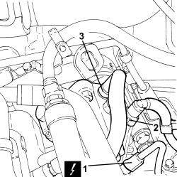
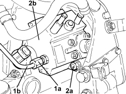
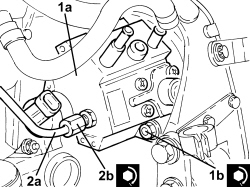

1060E10 DIESEL INJECTION PRESSURE PUMP - R.R.
- Path
- Procedures > 10 ENGINE > 1060 DIESEL INJECTION SYSTEM > 1060E DIESEL PRESSURE PUMP AND CONTROL > 1060E10 DIESEL INJECTION PRESSURE PUMP - R.R.
- Kind
- repair procedure (removal / refitting; the operation number is the code)
- Applies to
- engines: 1.9 JTD 8V, 1.9 JTD 16V, 2.4 JTD 20V; all production periods
- Interactive page
- https://sloeber94.github.io/elrnDB/#/939010549
Applies to: engines: 1.9 JTD 8V, 1.9 JTD 16V; all production periods
 Removing
Removing
 Refitting
RefittingOp. 1016A10 SOUND-PROOFING COVER - R.R
Op. 1048A50 TURBOCHARGER AIR INTAKE PIPE - R.R.
Op. 1084A16 OIL DIPSTICK PIPE - R.R
Op. 1048A28 VACUUM AIR CIRCUIT RESONATOR PIPE - R+R
Op. 4450B04 RIGHT FRONT WHEEL - R.R
Op. 7055B66 ENGINE COMPARTMENT DUST COVER IN RIGHT FRONT WHEEL ARCH - R.R.
Op. 7055B91 RIGHT FRONT WHEEL ARCH LINER - R.R.
Op. 4410D16 BRACKET (ONE) RETAINING CHASSIS TO BODY - R R
Op. 1092G10 SINGLE ENGINE BELT - R.R
Op. 1092A10 CRANKSHAFT PULLEY - R + R
Op. 1032B10 TOOTHED TIMING BELT - R + R FOR TIMING ADJUSTMENT OR REPLACEMENT
Op. 1060E30 PRESSURE PUMP DRIVE PULLEY - R.R.
1. Disconnect the electrical connection from the fuel pressure regulator on the pressure pump.
Description | Connector | |
|---|---|---|
1 | Fuel pressure regulator |
2. Disconnect the fuel supply pipe rapid connector, pressure pump side.
3. Loosen the band and disconnect the fuel return pipe from the pressure pump to the fuel return manifold, pressure pump side.

Applies to: engines: 1.9 JTD 8V, 1.9 JTD 16V; all production periods
1. Undo the connectors (1a) and remove the pipe from the pressure pump to the fuel manifold (1b), pressure pump side.
2. Undo the nuts (2a) and remove the pressure pump (2b) from the support.

Applies to: engines: 1.9 JTD 8V, 1.9 JTD 16V; all production periods
Refitting
Removing1. Position the pressure pump (1a) in its housing and secure it by tightening the nuts (1b) to the recommended torque.
Component | Fastening | dia | Value (daNm) | Validity |
|---|---|---|---|---|
Pressure pump | Nut | M8 | (support side) 2.3 - 2.8 | 1.9 JTD 8V 1.9 JTD 16V |
2. Connect the pipe from the pressure pump to the power assisted steering box (2a), pressure pump side and tighten the connector (2b) to the recommended torque.
Op. 1060F20 PIPE FROM PRESSURE PUMP TO FUEL MANIFOLD - R.R.
Component | Fastening | dia | Value (daNm) | Validity |
|---|---|---|---|---|
Pipe from pressure pump to fuel manifold | Connector | M12 | (pressure pump side) 2.2 - 2.4 | 1.9 JTD 8V 1.9 JTD 16V 2.4 JTD 20V |

Applies to: engines: 1.9 JTD 8V, 1.9 JTD 16V; all production periods
- Connect the fuel return pipe the fuel return pipe from the pressure pump to the fuel return manifold, pressure pump side, and tighten the band.
- Connect the fuel supply pipe rapid connector, pressure pump side.
- Connect the electrical connection to the fuel pressure regulator on the pressure pump.
Op. 1060E30 PRESSURE PUMP DRIVE PULLEY - R.R.
Op. 1032B10 TOOTHED TIMING BELT - R + R FOR TIMING ADJUSTMENT OR REPLACEMENT
Op. 1092A10 CRANKSHAFT PULLEY - R + R
Op. 1092G10 SINGLE ENGINE BELT - R.R
Op. 4410D16 BRACKET (ONE) RETAINING CHASSIS TO BODY - R R
Op. 7055B91 RIGHT FRONT WHEEL ARCH LINER - R.R.
Op. 7055B66 ENGINE COMPARTMENT DUST COVER IN RIGHT FRONT WHEEL ARCH - R.R.
Op. 4450B04 RIGHT FRONT WHEEL - R.R
Op. 1048A28 VACUUM AIR CIRCUIT RESONATOR PIPE - R+R
Op. 1084A16 OIL DIPSTICK PIPE - R.R
Applies to: engines: 2.4 JTD 20V; all production periods
- On this car, it is not possible to remove/refit the pressure pump on the car.
To perform this operation, the power unit must be removed/refitted
Op. 1004B10 POWER UNIT WITH MANUAL GEARBOX - R.R
and then the operation must be carried out at the bench, customising the operation according to the engine service procedures.
Topics linked from this page (15)
- 1004B10 POWER UNIT WITH MANUAL GEARBOX - R.R
- 1016A10 SOUND-PROOFING COVER - R.R
- 1032B10 TOOTHED TIMING BELT - R + R FOR TIMING ADJUSTMENT OR REPLACEMENT
- 1048A28 VACUUM AIR CIRCUIT RESONATOR PIPE - R+R
- 1048A50 TURBOCHARGER AIR INTAKE PIPE - R.R.
- 1060E30 PRESSURE PUMP DRIVE PULLEY - R.R.
- 1060F20 PIPE FROM PRESSURE PUMP TO FUEL MANIFOLD - R.R.
- 1084A16 OIL DIPSTICK PIPE - R.R
- 1092A10 CRANKSHAFT PULLEY - R + R
- 1092G10 SINGLE ENGINE BELT - R.R
- 4410D16 BRACKET (ONE) RETAINING CHASSIS TO BODY - R R
- 4450B04 RIGHT FRONT WHEEL - R.R
- 7055B66 ENGINE COMPARTMENT DUST COVER IN RIGHT FRONT WHEEL ARCH - R.R.
- 7055B91 RIGHT FRONT WHEEL ARCH LINER - R.R.
- N077 FUEL PRESSURE REGULATOR
Topics that link to this page (9)
- B010 ENGINE DOES NOT START (UNDER ANY CIRCUMSTANCES)
- B015 ENGINE DOES NOT START (STARTER MOTOR WORKING)
- D005 ENGINE DOES NOT PRODUCE BEST PERFORMANCE
- Y002 P0087 - PRESSURE ON FLUTE
- Y003 P0088 - PRESSURE ON FLUTE
- Y104 P0237 - TURBO PRESSURE
- Y105 P0238 - TURBO PRESSURE
- 1060E40 PRESSURE PUMP SUPPORT - R.R.
- 1072B10 INLET MANIFOLD - R + R AND REPLACE SEAL